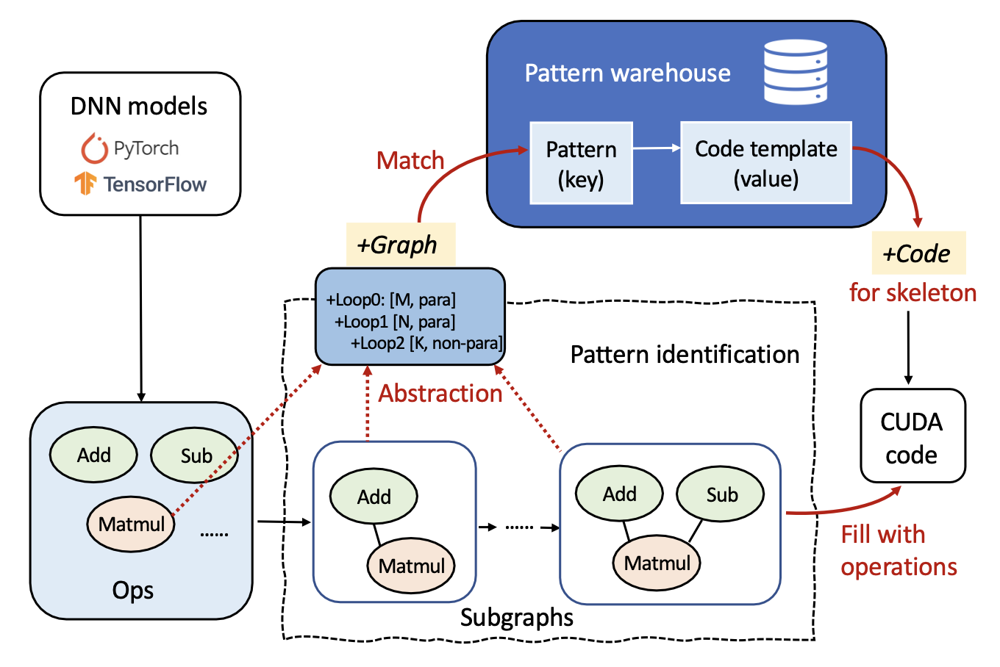
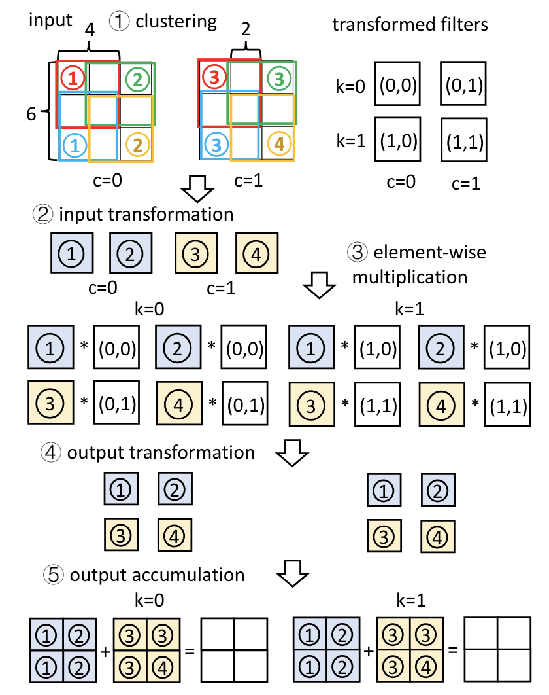

Ruofan Wu 乌若凡
2nd year PhD @ Umich
I am a second year Ph.D. student at University of Michigan, advised by Prof. Mosharaf Chowdhury. I received my Bachelor’s and Master’s degree in computer science at Renmin University of China (RUC) under the supervision of Prof. Feng Zhang. My research interests lie in machine learning compilers and scalable machine learning systems, with recent and upcoming work aiming to build energy-efficient execution stacks for large model training, particularly for generative AI workloads.
Email: ruofanw@umich.edu
Education
- 2024 - Present: University of Michigan (Umich), Ph.D. student in Computer Science & Engineering, Advisor: Prof. Mosharaf Chowdhury
- 2021 - 2024: Renmin University of China (RUC), M.E. in Computer Application Technology, Advisor: Prof. Feng Zhang
- 2017 - 2021: Renmin University of China (RUC), B.E. in Data Science and Big Data Technology
Experience
- 2023 - 2024: Microsoft,
DeepSpeedBing, Research Intern, Mentor: Dr. Zhen Zheng - 2022 - 2023: Alibaba Cloud, Platform of Artificial Intelligence (PAI), Research Intern, Mentor: Dr. Zhen Zheng
- 2021: Microsoft Research Asia (MSRA), Systems Research Group, Research Intern, Mentor: Dr. Fan Yang, Dr. Jilong Xue
- 2019 - 2020: North Carolina State University (NCSU), PICTure Research Group, Remote Intern, Advisor: Prof. Xipeng Shen
- 2019: DELL EMC China Technology R&D Center, Intern
Selected Publications

Jae-Won Chung,
Jeff J. Ma,
Ruofan Wu,
Jiachen Liu,
Oh Jun Kweon,
Yuxuan Xia,
Zhiyu Wu,
Mosharaf Chowdhury
The ML.ENERGY Benchmark: Toward Automated Inference Energy Measurement and Optimization
The ML.ENERGY Benchmark: Toward Automated Inference Energy Measurement and Optimization
In
NeurIPS Datasets and Benchmarks (Spotlight),
2025.

Runyu Lu*,
Shiqi He*,
Wenxuan Tan,
Shenggui Li,
Ruofan Wu,
Jeff J. Ma,
Ang Chen,
Mosharaf Chowdhury
TetriServe: Efficient DiT Serving for Heterogeneous Image Generation
TetriServe: Efficient DiT Serving for Heterogeneous Image Generation
In
Preprint,
2025.

Ruofan Wu,
Zhen Zheng,
Feng Zhang,
Chuanjie Liu,
Zaifeng Pan,
Jidong Zhai,
Xiaoyong Du
PluS: Highly Efficient and Expandable ML Compiler with Pluggable Graph Schedules
PluS: Highly Efficient and Expandable ML Compiler with Pluggable Graph Schedules
In
USENIX ATC,
2025.
Zaifeng Pan,
Zhen Zheng,
Feng Zhang,
Ruofan Wu,
Hao Liang,
Dalin Wang,
Xiafei Qiu,
Junjie Bai,
Wei Lin,
Xiaoyong Du
RECom: A Compiler Approach to Accelerating Recommendation Model Inference with Massive Embedding Columns
RECom: A Compiler Approach to Accelerating Recommendation Model Inference with Massive Embedding Columns
In
ASPLOS,
2024.
Hongyu Zhu,
Ruofan Wu,
Yijia Diao,
Shanbin Ke,
Haoyu Li,
Chen Zhang,
Jilong Xue,
Lingxiao Ma,
Yuqing Xia,
Wei Cui,
Fan Yang,
Mao Yang,
Lidong Zhou,
Asaf Cidon,
Gennady Pekhimenko
ROLLER: Fast and Efficient Tensor Compilation for Deep Learning
ROLLER: Fast and Efficient Tensor Compilation for Deep Learning
In
OSDI,
2022.

Ruofan Wu,
Feng Zhang,
Jiawei Guan,
Zhen Zheng,
Xiaoyong Du,
Xipeng Shen
DREW: Efficient Winograd CNN Inference with Deep Reuse
DREW: Efficient Winograd CNN Inference with Deep Reuse
In
WWW/TheWebConf,
2022.
Cite The ML.ENERGY Benchmark: Toward Automated Inference Energy Measurement and Optimization
@inproceedings{mlenergy-neuripsdb25, title={The {ML.ENERGY Benchmark}: Toward Automated Inference Energy Measurement and Optimization}, author={Jae-Won Chung and Jeff J. Ma and Ruofan Wu and Jiachen Liu and Oh Jun Kweon and Yuxuan Xia and Zhiyu Wu and Mosharaf Chowdhury}, year={2025}, booktitle={NeurIPS Datasets and Benchmarks}, }Cite TetriServe: Efficient DiT Serving for Heterogeneous Image Generation
@misc{lu2025tetriserveefficientditserving, title={TetriServe: Efficient DiT Serving for Heterogeneous Image Generation}, author={Runyu Lu and Shiqi He and Wenxuan Tan and Shenggui Li and Ruofan Wu and Jeff J. Ma and Ang Chen and Mosharaf Chowdhury}, year={2025}, eprint={2510.01565}, archivePrefix={arXiv}, primaryClass={cs.LG}, url={https://arxiv.org/abs/2510.01565}, }Cite PluS: Highly Efficient and Expandable ML Compiler with Pluggable Graph Schedules
@inproceedings{10.5555/3768039.3768078, author = {Wu, Ruofan and Zheng, Zhen and Zhang, Feng and Liu, Chuanjie and Pan, Zaifeng and Zhai, Jidong and Du, Xiaoyong}, title = {PluS: highly efficient and expandable ML compiler with pluggable graph schedules}, year = {2025}, isbn = {978-1-939133-48-9}, publisher = {USENIX Association}, address = {USA}, abstract = {Machine learning (ML) compilers are effective solutions for deploying diverse Deep Neural Network (DNN) workloads on various hardware platforms automatically. However, there is a notable lag in existing ML compilers when it comes to supporting emerging optimization techniques like recent attention optimizations. These compilers lack the requisite flexibility to support expert-driven subgraph optimizations timely, resulting in suboptimal performance compared to manually optimized libraries. Conversely, template-based compilers lack the ability to abstractly express subgraphs, thereby reducing their adaptability to subtle changes in model architectures.In this paper, we present PluS, an end-to-end ML compiler that facilitates the deployment of expert-optimized subgraph implementations while still preserving compiler flexibility. We rethink the encapsulation of ML compiler and decouple the burdensome embedded graph transformation process. PluS provides a lightweight loop-centric subgraph abstraction for experts to manage a flexible pattern warehouse, and employs a pattern identification approach for subgraph generation. As a result, PluS can deploy efficient subgraph implementations with minimal manual efforts, making it outperform the state-of-the-art rule-based embedded compilers (up to 4.04\texttimes{} speedup) on popular ML models.}, booktitle = {Proceedings of the 2025 USENIX Conference on Usenix Annual Technical Conference}, articleno = {39}, numpages = {17}, location = {Boston, MA, USA}, series = {USENIX ATC '25} }